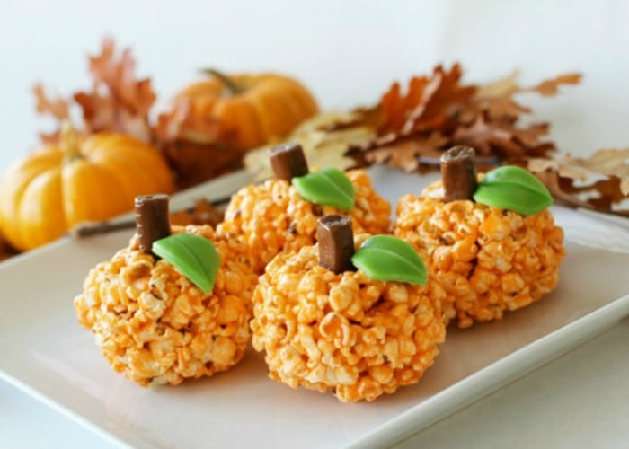

Home
Halloween Popcorn Pumpkins

Description
Popcorn balls are colored orange and made to look like pumpkins. These are a fun Halloween treat!
Ingredients
- 5 cups popped popcorn
- 1 cup candy corn
- 1 cup chopped salted peanuts
- ½ cup butter or margarine
- 3 cups miniature marshmallows
- 4 drops red food coloring
- 3 drops yellow food coloring
- 4 sticks red or black licorice, cut into thirds
Steps
- Grease a muffin pan and set aside. Place popcorn, candy corn and peanuts into a large bowl and set aside.
- Melt the butter in a large saucepan over medium heat. Stir in marshmallows, red food coloring and yellow food coloring, adjusting color if needed to get a nice shade of orange. When the marshmallows are completely melted, pour over the popcorn and stir to evenly distribute the candy, nuts and marshmallow.
- Use a greased spoon to fill the muffin cups. Insert a piece of licorice to act as the stem, and mold the popcorn around it. Let stand until firm, 10 to 15 minutes, and then pull the pumpkins out by their stems and admire your pumpkin patch!